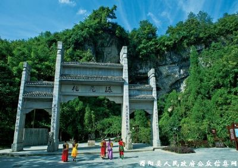
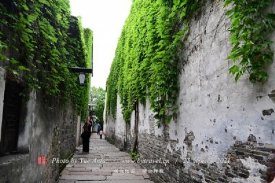
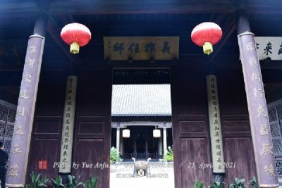

酉阳县
位于重庆市东南部，地处武陵山区腹地，是出渝
达鄂、湘、黔的重要门户，素有"渝东南门户、湘喉"
之称。
酉阳县东邻湖南省龙山县，南与秀山县、贵州省
松桃、印江县接壤，西与贵州沿河县隔江(乌江)相望，
西北与彭水县，正北与黔江县、湖北省咸丰、来凤县
相连。至2014年底，酉阳县幅员面积5173平方公里
辖39个乡镇;常住人口为56.24万人(户籍人口86.04万人)。
以土家族、苗族为主，另有汉族、回族、蒙古族等民
族，共18个民族。
酉阳县为全国科技进步先进县，获得过"全国文明
县城"、"中国绿色名县"、"市级生态县"等荣誉称号。
|
|  |
离酉阳县城不到500米,有一石灰岩溶洞，高、宽约30米。洞前的桃花溪水自洞内流出，清澈见底，哗哗地流入泉孔河。溪畔有一个四角木质小亭。传说是当年渔人问津之处，故名“问津亭”。仰视洞口高处，是由著名历史学家马识途先生题写的“桃花源”三个大字。高大雄伟的石牌坊上，镌刻着著名诗人流沙河题写的“时光隧道今通古，桑竹田园主娱宾”和“无影无踪渔郎路志，有根有据陶令文章”两幅楹联。逆桃花溪入洞，洞内钟乳倒挂 |
|  |
重庆市第一历史文化名镇、国家4A级旅游景区——龚滩古镇，位于阿蓬江与乌江交汇处的凤凰山麓，是由乌江连接重庆的黄金口岸。据史料记载，明代万历年间（1573年）山洪暴发，垮塌的岩石填塞乌江而成滩，过往船只不能通行，逐渐形成古镇，因当年这里的居民龚姓众多，故名龚滩。从1700余年的风雨苍桑中走来的龚滩古镇 |
|  |
中国历史文化名镇——龙潭古镇位于渝东南武陵山区腹地，面积1.5平方公里，是3.5万土家、苗、汉各族人民的聚居地。古镇重建于清雍正13年（1735年），因伏龙山下两个状如龙眼的汆水洞常积水成潭，故名龙潭。古镇顺湄舒河而建，规模庞大，保存完好。现存3公里的石板街被磨蹭得光可鉴人、青幽如玉，古老的海生物化石时隐时现。50多座土家吊脚楼翘角飞檐，形态美观。街上店铺林立，巷道相互连通。封火墙壁垒森严，气势恢弘。四合院古朴幽静，颇具特色。为“县丞”、“巡检”、“州同”、“县佐”所在地，古有“小南京”和“货龙潭”之美誉 |
|